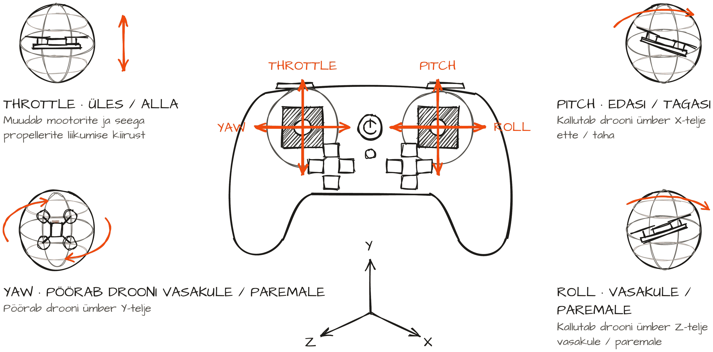
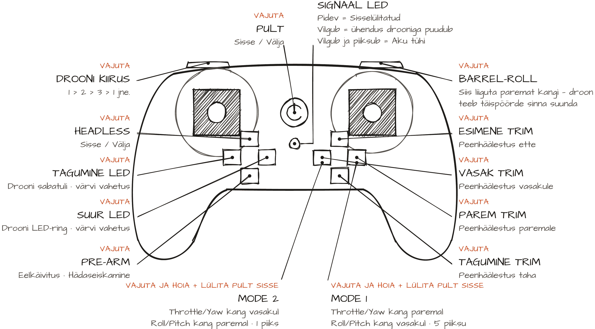
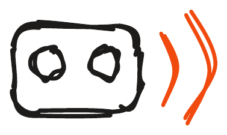

B200 pult näeb välja nagu mängukonsooli pult ja nii see ka töötab. Siin on kirjas, mida kangid ja nupud teevad. Kuidas droon täpsemalt liigub, on juhendis „Kuidas droon liigub“.
Mida kangid teevad? (Mode 2)
Mode 2 seadistusega juhib vasak kang tõmmet ja yaw’d: üles ja alla muudab mootorite ja propellerite kiirust ehk kõrgust, vasakule ja paremale pöörab drooni nina paigal (yaw, pööre ümber püsttelje). Parem kang juhib pitchi ja rolli: ette ja taha kallutab drooni ette ja taha (pitch), vasakule ja paremale kallutab külgedele (roll). Valdav enamik piloote meie piirkonnas lendab Mode 2 seadistusega. Kuidas droon iga liigutuse teeb, on lähemalt juhendis Kuidas droon liigub.

Mida nupud teevad?
Puldil on nupud sisse- ja väljalülitamiseks, drooni kiiruse valimiseks (1 > 2 > 3 > 1), headless-režiimiks, tagumise LED-i ja suure LED-ringi värvi vahetamiseks ning pre-armiks ehk eelkäivituseks, mis on ühtlasi hädaseiskamine. Paremal on barrel roll (vajuta ja liiguta paremat kangi, droon teeb täispöörde sinna suunda) ja neli trimminuppu peenhäälestuseks ette, taha, vasakule ja paremale.

Mida signaali-LED ütleb?
Puldi signaali-LED põleb pidevalt, kui pult on sees ja ühendus on olemas. Kui see vilgub, puudub ühendus drooniga ja pult tuleb drooniga uuesti siduda (vt teemat „Õhku ja tagasi“). Kui LED vilgub ja pult piiksub, on aku tühi: maandu ja vaheta drooni aku või puldi patareid.



Mode 1 või Mode 2
Režiimi vahetamiseks hoia all joonisel märgitud Mode 2 või Mode 1 nuppu ja lülita samal ajal pult sisse. Mode 2 puhul piiksub pult üks kord: tõmme ja yaw on vasakul kangil, pitch ja roll paremal. Mode 1 puhul piiksub pult viis korda ja kangid on vastupidi. Kui tulede värv vahetub, aga droon ei allu, on pult vales režiimis.
Headless ja trimmid
Headless-režiimis droon justkui ignoreerib oma pööret (yaw): kang ette viib drooni alati sinust eemale, ükskõik kuhu droon vaatab. Algajale on see lihtsam. Aseta droon enda ette nii, et tagumine LED vaatab otse sinu poole, kalibreeri ja hakka lendama. Liigamängudes on headless lubatud, aga see on kark: algul on lihtsam, aga see ei õpeta drooni suunda jälgima ja pikas plaanis segab. Õpi võimalikult vara ilma selleta lendama. Kui droon ei taha õhus paigal püsida, kasuta trimme: aseta droon enda ette, kalibreeri, tõuse umbes meetri kõrgusele ja vajuta vastassuunalist trimminuppu seni, kuni droon püsib paigal.


Mode 2: vasak kang juhib tõmmet ja pööret, parem kang drooni kallet.
Treenerile: 10 minuti plaan
| Aeg | Slaid | Mida rääkida |
|---|---|---|
| 0:00 | Pealkiri | Anna pult kätte (välja lülitatult) ja küsi: „Mitu nuppu siin on? Mida sa arvad, mida need teevad?“ |
| 0:40 | Joon. 1: Mida kangid teevad? (Mode 2) | Vasak kang: üles ja alla on tõmme (throttle), vasakule ja paremale on yaw, droon pöörab paigal. Parem kang: ette ja taha on pitch, vasakule ja paremale on roll. Näita iga liigutust kätega. |
| 2:26 | Joon. 2: Mida nupud teevad? | Käi nupud läbi vasakult paremale: drooni kiirus, headless, tagumine LED, suur LED, pre-arm. Paremal: barrel roll ja neli trimmi. Üleval sisse- ja väljalülitus ning signaali-LED. |
| 4:12 | Joon. 3: Mida signaali-LED ütleb? | Puldi signaali-LED põleb pidevalt, kui pult on sees ja ühendus on olemas. Kui see vilgub, puudub ühendus drooniga ja pult tuleb drooniga uuesti siduda (vt teemat „Õhku ja tagasi“). Kui LED vilgub ja pult piiksub, on aku tühi: maandu ja vaheta drooni aku või puldi patareid. |
| 5:58 | Joon. 4: Mode 1 või Mode 2 | Režiimi vahetamiseks hoia all joonisel märgitud Mode 2 või Mode 1 nuppu ja lülita samal ajal pult sisse. Mode 2 puhul piiksub pult üks kord: tõmme ja yaw on vasakul kangil, pitch ja roll paremal. Mode 1 puhul piiksub pult viis korda ja kangid on vastupidi. Kui tulede värv vahetub, aga droon ei allu, on pult vales režiimis. |
| 7:44 | Joon. 5: Headless ja trimmid | Headless-režiimis droon justkui ignoreerib oma pööret (yaw): kang ette viib drooni alati sinust eemale, ükskõik kuhu droon vaatab. Algajale on see lihtsam. Aseta droon enda ette nii, et tagumine LED vaatab otse sinu poole, kalibreeri ja hakka lendama. Liigamängudes on headless lubatud, aga see on kark: algul on lihtsam, aga see ei õpeta drooni suunda jälgima ja pikas plaanis segab. Õpi võimalikult vara ilma selleta lendama. Kui droon ei taha õhus paigal püsida, kasuta trimme: aseta droon enda ette, kalibreeri, tõuse umbes meetri kõrgusele ja vajuta vastassuunalist trimminuppu seni, kuni droon püsib paigal. |
| 9:30 | Jäta meelde | „Mode 2: vasak kang juhib tõmmet ja pööret, parem kang drooni kallet.“ |
Demo: Kõik hoiavad pulti. Hõika „üles!“, „pööra paremale!“, „edasi!“, „vasakule!“ ja kõik näitavad kangidega.